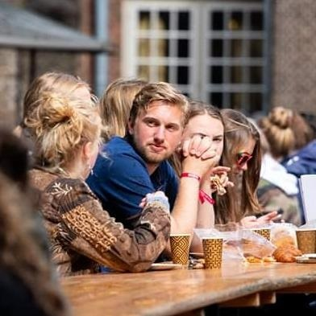

My name is Martijn van Bommel.
Currently I am participating in the Master Programme 'Book and Digital Media Studies.'
Educational background
Before starting with the Book and Digital Media programme, I studied at the University of Applied Sciences in Amsterdam and the University of Leiden.
After graduating from high school, I enrolled in the English Teacher programme in Amsterdam. Then, after finishing the first year, I decided to start with the English Language and Culture BA programme at the University of Leiden.
It is during this programme that I developed quite the interest for books and literature, which eventually led me to the MA programme Book and Digital Media Studies.
Personal information
Languages that I master:
What do I expect to learn from the Digital Media Technology course?
| Prior Knowledge | Expectations |
|---|---|
| HTML, CSS | To gain a basic understanding of various programming languages, such as HTML, CSS, XML, SQL, etc. As well as more knowledge on the importance of Digital Media and technology in the 'written-text domain'. |